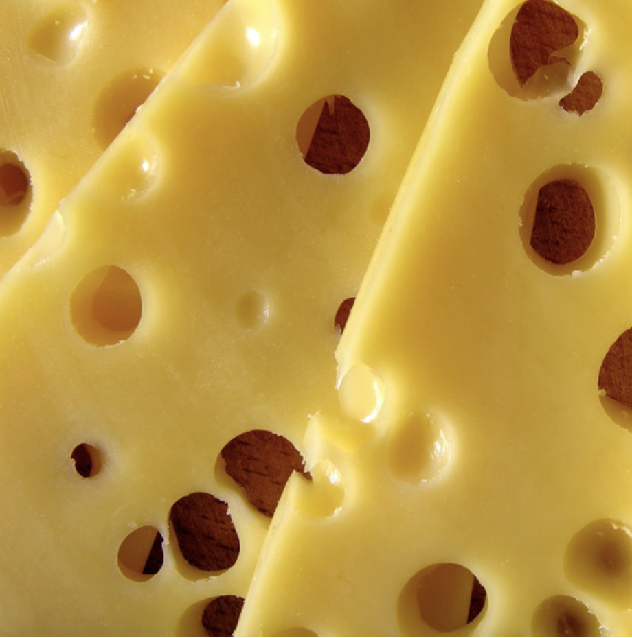
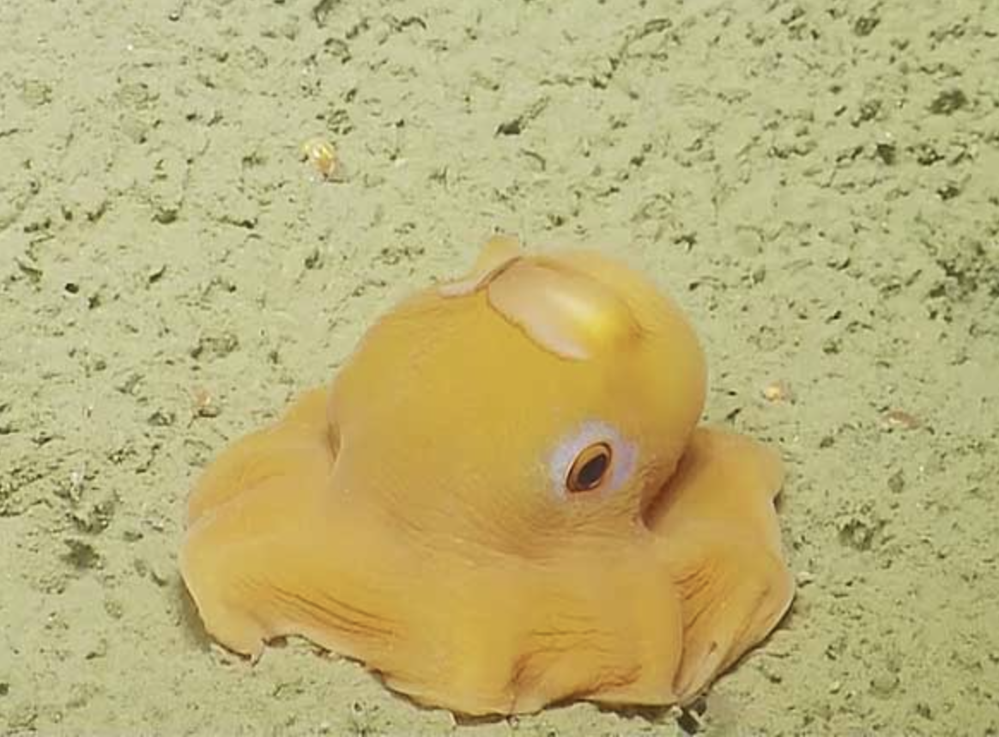
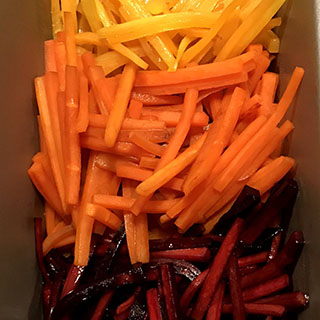
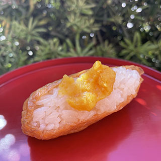
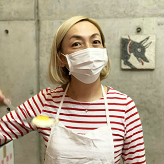

ABOUT
- 

- 

本格的なyellow実地研修

Yellowの知識もしっかりと取得
コレクションにはしっかりとした色に対する知識が欠かせません。
Good Yellow Tokyoでは、一流講師陣による
Yellowコレクションに必要な”いろは”を余すところなく学べます。
Yellowそのものではなく、色全体を学ぶことも可能ですので
ワールドワイド展開も夢ではないでしょう。
